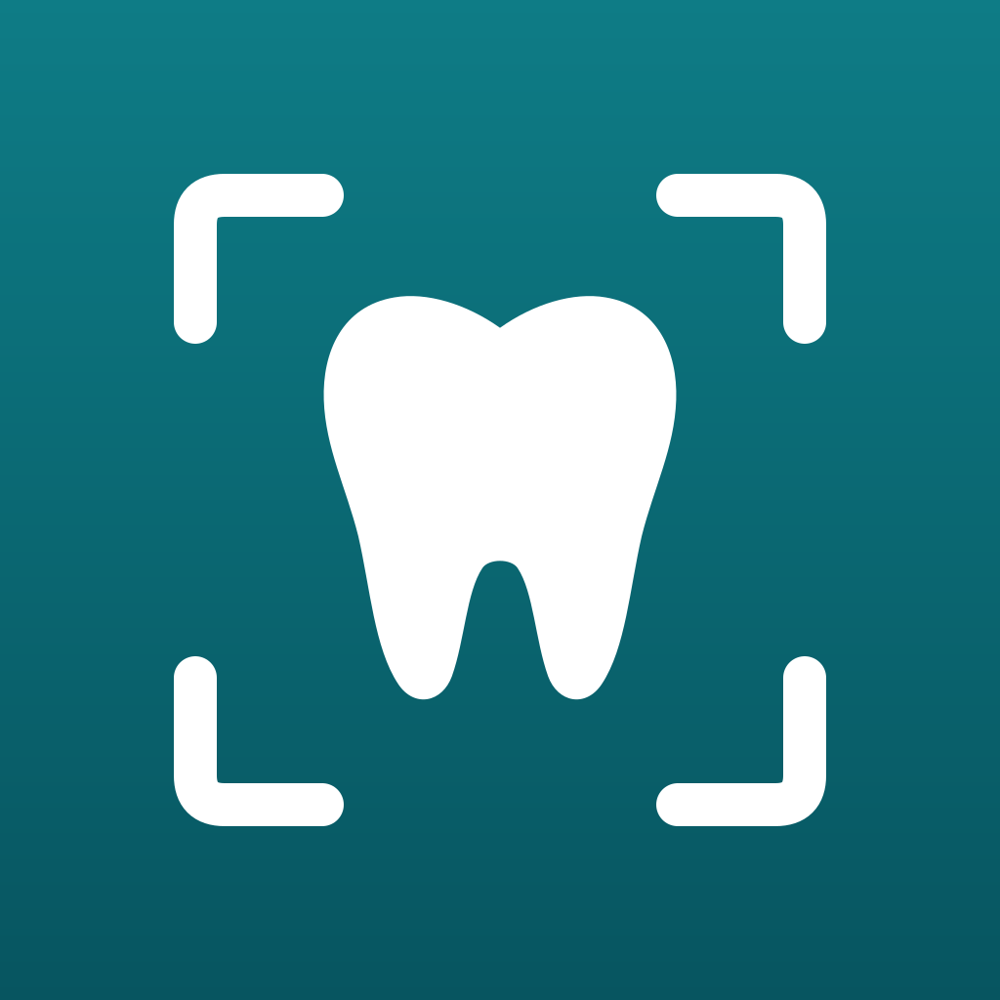

DentShotGizlilik politikası
DentShot, diş kliniklerinin klinik fotoğraflarını standart şekilde çekip kliniğin kendi Google Drive hesabına kaydetmesini sağlar.
Hangi veriler işlenir
- Hasta adı soyadı ve klinik tarafından girilen notlar.
- Seans tarihleri, etiketleri ve her fotoğrafın teknik bilgileri (poz, lens, odak uzaklığı, eğim, beyaz dengesi).
- Her uygulama kurulumu için rastgele bir kimlik ve işlem kaydı (giriş, çekim, görüntüleme, paylaşım, ayar değişikliği).
- Fotoğraflar yalnızca kliniğin Google Drive hesabında tutulur. DentShot sunucuları fotoğraf saklamaz; yalnızca 20 KB'tan küçük önizlemeler Supabase (AB, Frankfurt) üzerinde tutulur.
Hangi veriler işlenmez
T.C. kimlik numarası, telefon, dosya numarası, tanı ve tedavi bilgisi istenmez. Fotoğraflardaki GPS konumu ve cihaz seri numaraları yüklemeden önce silinir.
Erişim
Google Drive erişimi drive.file kapsamıyla sınırlıdır: uygulama yalnızca kendi oluşturduğu klasör ve dosyaları görür. Google yenileme anahtarı sunucuda şifreli tutulur ve yalnızca anahtar aracısı tarafından okunur.
Saklama ve silme
Uygulama fotoğrafları veya hasta klasörlerini kendiliğinden silmez. Hesap silindiğinde kliniğin DentShot verileri ve önizlemeleri silinir, Google erişimi iptal edilir; Drive'daki fotoğraflar klinikte kalır.
Veri sorumlusu klinik, veri işleyen DentShot'tır. Başvurular için kliniğinizle iletişime geçin.
İletişim: senerumutdeniz@gmail.com
Privacy policy
DentShot helps dental clinics take standardised clinical photos and save them to the clinic's own Google Drive.
What is processed
- Patient full name and notes the clinic enters.
- Session dates, labels and each photo's technical data (pose, lens, focus distance, tilt, white balance).
- A random per-install app ID and an activity log (sign-in, capture, viewing, sharing, settings changes).
- Photos are stored only in the clinic's Google Drive. DentShot servers store no photos; only thumbnails under 20 KB are kept on Supabase (EU, Frankfurt).
What is not processed
No national ID number, phone, file number, diagnosis or treatment data is requested. GPS location and device serial numbers are removed from photos before upload.
Access
Google Drive access is limited to the drive.file scope: the app sees only folders and files it created. The Google refresh token is stored encrypted on the server and read only by the token broker.
Retention and deletion
The app never deletes photos or patient folders on its own. Deleting the account removes the clinic's DentShot data and thumbnails and revokes Google access; photos in Drive stay with the clinic.
The clinic is the data controller and DentShot the data processor. Contact your clinic for requests.
Contact: senerumutdeniz@gmail.com